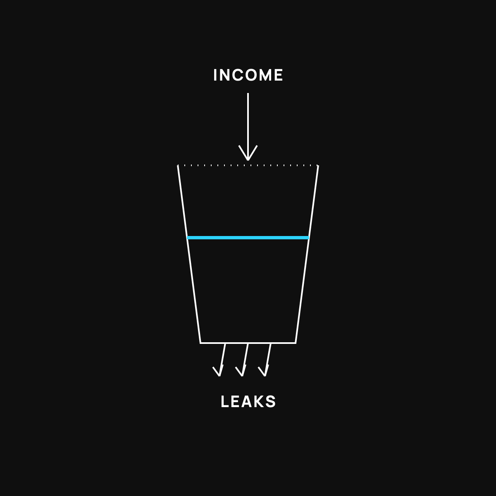

Why You Feel Broke on a Good Income
You make more than you used to and the account looks the same. It's not you. Your bucket has holes.

You make decent money now. More than you used to. And somehow the bank account still looks the same at the end of the month. If you feel a little crazy about that, you're not. There's a simple reason, and it isn't that you're bad with money.
Here it is: your money is filling and leaking at the same time.
The bucket
Picture a bucket under a running faucet. Your paycheck is the water pouring in. Feels good. But there are little holes near the bottom, and water is draining out just as fast as it fills.
You can turn the faucet up all you want, a raise, a bonus, a better job, and the water level barely moves, because the holes got a little bigger too. That's the whole trick of feeling broke on a good income. It was never really about how much comes in. It's about what quietly leaks out.
So let's find the holes.
Leak #1: your lifestyle grew with your paycheck
This one's sneaky because it feels earned. You make more, so you drive a little nicer, eat out a little more, upgrade the phone, the couch, the vacation. None of it feels reckless. Each step is small.
But your spending crept up to match your income, dollar for dollar. Money folks call it lifestyle creep. You don't feel richer because you spent the raise before it ever settled.
Leak #2: your fixed costs ratcheted up
Some bills, once they go up, don't come back down. A bigger place. A second car payment. The nicer insurance. These are the heavy leaks, because they hit every single month, automatically, whether you think about them or not.
A $40 dinner is a one-time drip. A $400 monthly payment is a hole you can't easily plug. The problem isn't the fun money. It's the fixed money that quietly locked in.
Leak #3: the dollar itself shrinks
Even the water you keep is slowly evaporating. Prices drift up over time, so the same paycheck buys a little less each year. You didn't change anything, but the ground moved under you. This one's small month to month and brutal over a decade.
Why the raise didn't fix it
Now you can see it. A raise turns up the faucet. But if the holes grow to match, and they usually do, the level in the bucket stays flat. You worked harder, earned more, and feel exactly as broke as before. Not because you failed. Because nobody told you the bucket had holes.
What to do this week
You don't fix a leaky bucket by pouring in more water. You patch the holes. Start with the easy ones.
- Name your three biggest fixed costs. Just knowing them is half the battle. These are your heaviest leaks, so this is where real money hides.
- Freeze one lifestyle upgrade. Not all of them. Pick one thing you were about to level up and just leave it where it is for now. That's a patched hole.
- Catch the water before it leaks. The moment your paycheck lands, move a small set amount into savings automatically. Water you never see is water that can't drain out.
That's it. No spreadsheet, no shame. Just three holes patched.
The takeaway
Feeling broke on a good income isn't a character flaw. It's a leaky bucket. And the fix was never a bigger faucet. It's finding the holes and quietly patching them, one at a time, until the level finally starts to rise.
New here?
Normaltown USA is plain-English money and healthcare help for normal people. No jargon, no hype. Start here.